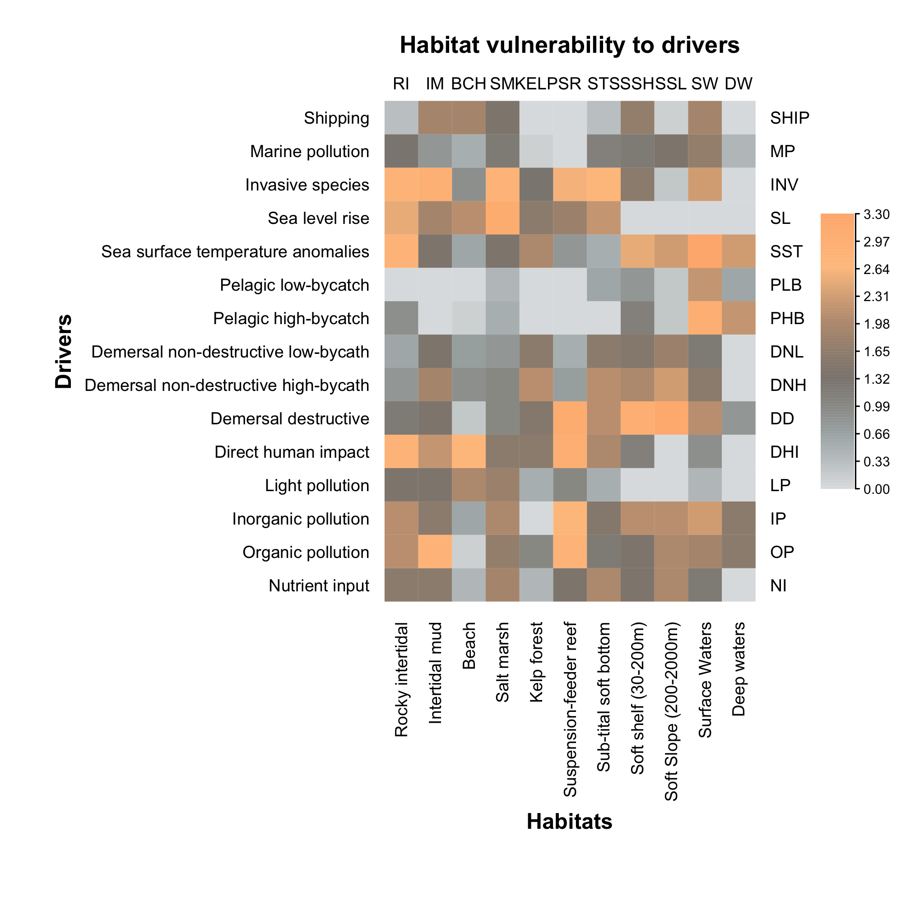

4 Approach
4.1 Steps
A number of works from scientific and grey literature1 detail the various steps of a cumulative impact assessment (e.g. Hegmann et al. 1999). Over the past few years, the Transport Canada team has worked with a number of Canadian and international experts on the approach to assessing the cumulative effects of marine vessel activities (e.g. Lerner 2018; Pickard et al. 2019). A cumulative effects assessment typically includes, but is not limited to,
Identifying, involving and communicating with assessment stakeholders and Indigenous and non-Indigenous communities at all steps of the approach
Developing the scope of assessment
- Setting assessment objectives
- Defining the spatial and temporal limits of the study area
- Identifying activities of concern and stressors that arise from them
- Identifying and prioritizing valued components to which the assessment must relate
Establishing a profile of the study area
- Characterizing the intensity, extent and frequency of activities and stressors
- Characterizing the valued components
- Assessing the vulnerability of valued components to stressors
Cumulative effects assessment
Diagnosing the analysis
- Determining the spatial distribution of the cumulative effects
- Exploring the effect of stressors on the valued components in detail
- Identifying sources of uncertainty and knowledge gaps
Implementing decision-making processes
- Identifying and putting in place management measures
- Identifying mitigation and compensation measures
Monitoring and adaptive management
The identification and involvement of First Nations and stakeholders (1) and the definition of the scope of assessment (2) have already been completed through a number of engagement sessions and workshops with experts in the field. In light of this process, we will now focus on the profile of the study area (3), the analysis of the cumulative effects (4) and the critical assessment of the analysis (5). Steps 6 and 7 are not part of this contract.
4.2 Scope
The assessment of the cumulative effects of marine vessel activities will be conducted for the ecosystems of the St. Lawrence (fluvial and estuary section, that is, from Montreal to Pointe-des-Monts) and the Saguenay (deep-water portion as far as Saint-Fulgence). The assessment process will help build a profile of the spatial distribution of the valued components and stressors arising from marine vessel activities in the study area targeted by the analysis. Marine vessel activities involve not only commercial vessels, but also cruise ships, ferries, fishing boats and pleasure craft. Port infrastructure is not included in this project. The vulnerability of the valued components to the various stressors will then be assessed. Lastly, the profile of the study area will be used to assess the cumulative effects of marine vessel activities on the valued components targeted. This study seeks a more proactive and holistic management of marine and freshwater ecosystems.
The cumulative effects assessment methodology and the steps of the approach will provide a present-day geographic profile of the study area, sources of pressure associated with marine traffic and the valued components deemed a priority. This profile will identify the knowledge available within the study area. This knowledge could, in another phase, enhance the pilot project and help with recurring analyses of cumulative effects, exploring new management issues, and expanding the study scope in order to include additional sectors of industry and increase the surface area of the study area.
Collaboration with First Nations and the integration of Indigenous knowledge will be given priority in the approach. Discussions and conclusions arising out of workshops with First Nations representatives and other stakeholders for the project’s development will be major assets for the cumulative effects assessment. Indigenous knowledge, where available, will be used to detect changes in the environment and improve our understanding of the cumulative effects.
4.3 Study area
4.3.1 Activities and stressors
A characterization of the spatial distribution and intensity of stressors related to marine vessel activities in the study area is one of the most important elements in building a profile of the study area for a cumulative effects assessment. The marine vessel activities and stressors to be used for the pilot study are listed in Table 1. Available data used to characterize these stressors from these marine activities will be compiled.
Table 1. List of marine activities identified for the pilot study on the cumulative effects of marine activities in the St. Lawrence.
| Marine activities |
|---|
| Dredging |
| Anchorages |
| Groundings / wreckings |
| Operational discharges |
| Accidental spills |
| Movement underway |
| Fishing gear |
The spatial distribution and intensity of each stressor will be characterized individually. For example, vessel movements could be characterized using navigation plots and vessel types, while dredging activities could be characterized according to the total quantity of sediment dredged (i.e. removed from one site or deposited at another). The specific data and approaches used will depend on the quality and availability of existing data. Once the individual characterization of stressors is complete, these will be input into a database that can be cross-referenced with the characterization of the valued components. These two databases will enable an analysis of the cumulative effects of stressors on valued components in the study area.
One example is an initiative taken from our research work called eDrivers (Beauchesne et al. 2020) and an interactive digital tool used to view an integrative database describing multiple stressors within the Estuary and Gulf of St. Lawrence:
4.3.2 Valued components
The valued components – i.e. elements to which the cumulative effects analysis pertains – were identified beforehand during engagement sessions and workshops with experts in the field, Indigenous representatives and multiple stakeholders. The valued components were selected separately for the fluvial (Montreal to the Saguenay River) and marine (Saguenay River and the Estuary) sectors of the St. Lawrence. The list of valued components identified will be used for this report. We will identify the available data that we can use for spatial characterization of these components (Table 2).
Table 2. List of valued components identified for the pilot study on the cumulative effects of marine vessel activities in the St. Lawrence
| Valued component | Example of sub-category | Freshwater environment | Marine environment |
|---|---|---|---|
| Water quality | Water turbidity | X | X |
| Wildlife and plant | Coastal habitats | X | X |
| habitats | Benthic habitats | ||
| Pelagic habitats | |||
| Significant sites | Indigenous heritage and cultural sites | X | X |
| Archeological sites | |||
| Tourist sites | |||
| Protected areas | |||
| Diversity hotspots | |||
| Bank integrity | Artificial banks | X | |
| Rate of erosion | |||
| Marine mammals | Frequently observed species | X |
Just like stressors, valued components will be characterized individually. For example, wildlife and plant habitats could be delineated based on knowledge about critical fish habitats in the study area and the known distribution of species at risk; marine mammals could be characterized according to the distribution of populations or based on areas of importance for their food supply. The specific data and approaches used will depend on the quality and availability of existing data. Once the individual characterization is complete, the valued components will be compiled in an integrative database that can be cross-referenced with the characterization of stressors, which will make it possible to study the cumulative effects in the study area.
4.3.3 Vulnerability
The vulnerability of the valued components to stressors caused by marine vessel activities will be evaluated for the cumulative effects assessment. This type of knowledge can be particularly difficult to obtain; entire research teams can be dedicated to examining the vulnerability of a single valued component to a single stressor, such as the vulnerability of marine mammals to underwater noise. While the vulnerability of some valued components to certain stressors is well documented and would allow for a robust assessment of individual environmental impacts, this type of knowledge is rarely – if ever – available for all “valued component–stressor” combinations. Yet, it is a necessity for a cumulative effects assessment.
A qualitative approach based on the opinion of experts and bibliographic research is therefore generally used to generate a vulnerability scoring matrix for all combinations of valued components and stressors (Figure 1). The use of a method through expert consultation thus adds value to expertise and knowledge that would not otherwise be available to support management and decision-making (Teck et al. 2010). According to the available knowledge, we will proceed with a bibliographic census to assess the vulnerability of the valued components to each stressor. This bibliographic research will be supplemented by knowledge from experts in the field to capture the known local particularities. The results of collaboration with all the participants involved in the project could, at this stage, make a particularly significant contribution to the cumulative effects assessment.
Various approaches can then be applied in order to use the qualitative information gathered to obtain the scoring matrix for the relative vulnerability of the valued components to the stressors. For example, the spatial scale of the stressors, their frequency, their functional effects (such as on the reproduction of species), or even the resistance or resilience of valued components could be used as criteria to assess the vulnerability of the valued components. These criteria will be selected according to the information gathered during the bibliographic research phase.

Figure 1. Example of a matrix of the vulnerability of various types of habitats to a number of stressors—called “drivers” in the figure—represented by the colour gradient (i.e. heat map; adapted from Halpern et al. 2019).
4.4 Cumulative effects assessment methodology
The cumulative effects of marine vessel activities will be assessed according to the methodology developed by Benjamin Halpern’s team at the University of California in Santa Barbara (Halpern et al. 2008, 2015, 2019). This method requires three types of data, which were outlined earlier for the study area profile: (1) the mapped presence or absence of valued components on which the cumulative impacts will be calculated (\(C_i\)), (2) the mapping of human impacts and their associated stressors (\(S_j\)) – i.e. stressors arising from marine vessel activities as part of this study – and (3) a matrix detailing the vulnerability of valued components to each stressor included in the analysis (\(\mu_{i,j}\)). These data are then added to a grid consisting of cells of uniform size characterizing the targeted study area. The cumulative impact predictions (\(I_C\)) are then calculated for each cell (\(x\)) of the grid using the following formula:
\[I_{C_x} = \sum_{i=1}^n \sum_{j=1}^m C_{i,x} * S_{j,x} * \mu_{i,j}\text{.}\]
The assessment of cumulative impacts is therefore obtained by adding all the individual effects of the stressors on all the valued components. This method proposes the calculation of a relative cumulative effects indicator. The term relative is central to understanding the assessment method proposed. An absolute indicator would reveal a change in the state of the valued components relative to the accumulation of stressors, such as a decrease in the population of belugas in the St. Lawrence Estuary in response to the accumulation of stressors. A relative indicator provides a comparison of the various stressors according to their intensity in the region studied and their effects on the valued components. Although it does not make it possible to assess the response of a valued component to one or more stressors, this approach offers more flexibility by enabling consideration of various types of data and knowledge that cannot normally be compared against one another.
This relative cumulative effects indicator can also be used to assess the relative share of a single stressor or a sub-group of stressors on the valued components. For example, a relative cumulative effects assessment could cover all marine mammal species in the study area. The index could be broken down to obtain the relative effect of all stressors on a single species, a single stressor on all species or any combination of stressors and valued components of interest. Figure 2 shows a fictitious example of various steps in the proposed method, from the study area profile to the relative cumulative effects assessment.

Figure 2. Fictitious example of a relative cumulative effects assessment according to the methodology proposed by Halpern et al. (2008). The study begins with delineating a study area of interest (A). A profile of the study area is then created by characterizing the distribution of stressors (B) and valued components (C) to achieve the assessment objectives. Adding all the stressors makes it possible to identify the environments most exposed to cumulative stress, that is, cumulative exposure (D). The sum of the valued components, meanwhile, helps identify environments in the study area where a greater number of valued components overlap (E). By combining the distribution of stressors and valued components as well as the vulnerability of valued components to stressors, a relative assessment of the individual effects is obtained (F). The impact of all the stressors on a single valued component can be assessed (G), as can the impact of a single stressor on all the valued components (H). The addition of all the individual impacts provides a relative assessment of the cumulative effects, comprising all combinations of stressors and valued components (I).
4.5 Analysis results
4.5.1 Spatial distribution of cumulative effects
The relative cumulative effects assessment will help identify sites or regions most vulnerable to the accumulation of stressors in the study area. Figure 3 shows an example of a relative assessment of the cumulative effects of various stressors on habitats in the Estuary and Gulf of St. Lawrence (Beauchesne et al. 2018).

Figure 3. Relative assessment of the cumulative effects of 15 stressors on 11 habitats in the Estuary and Gulf of St. Lawrence
4.5.2 Detailed results
The cumulative effects assessment offers an integrative index that can be used to explore the accumulation of the effects of stressors in detail. A detailed exploration will be completed of the effects associated with each stressor on each valued component (Figure 2G, H). For example, we will explore the cumulative effects of marine vessel activities on plant and wildlife habitats separately from the cumulative effects on sites of significance in the study area. We will also explore the spatial distribution of the cumulative effects in two sectors of the study area separately. Cumulative exposure (Figure 2D) will also be analyzed to identify environments in the study area most exposed to stressors arising from marine vessel activities.
These analysis diagnostics will make it possible to, among other things, explore the cumulative effect indicator and identify the valued components most affected by the accumulation of the effects of stressors in the study area, the stressors of greatest concern and the areas most exposed to the accumulation of the effects of stressors. During these steps, we will also be able to identify the pathways of effects (DFO 2020) that are most likely to impact the various valued components considered by the cumulative effects assessment. Pathways of effects establish the links between activities and their potential impacts on the various aspects of the ecosystems.
We will also identify exposure pathways of valued components to various stressors, that is, environments where the distribution of stressors overlaps with that of valued components. This index, which does not consider the vulnerability of valued components to stressors, will help identify stressors to which valued components are more frequently exposed in the study area. Considering the uncertainty and the difficulties in assessing the vulnerability of valued components, this relative index allows for the strict use of data that are typically more robust – characterization of stressors and valued components – to identify environments and valued components most at risk in the study area.
4.5.3 Uncertainties and gaps
The assessment results and conclusions will be limited by data availability. It is therefore important to properly document the uncertainty associated with each data source and all knowledge gaps identified during the cumulative effects assessment. This aspect is particularly important because this is a pilot study that will not be able to address all questions about the cumulative effects of marine vessel activities in the St. Lawrence.
4.5.4 Special considerations
The proposed relative cumulative effects assessment is spatially explicit; it will provide a description of the spatial distribution and relative intensity of the cumulative effects in the study area. This type of regional approach poses a few constraints, including the need to use mainly stressors and valued components that can have a spatial characterization completed, ideally for the entire study area. This makes the use of ad hoc studies difficult. For example, it would be difficult to include an assessment of fishery impacts on a common eel population at the mouth of a single river in the study area.
As part of this pilot study, we will focus on a present-day cumulative effects assessment, that is, over the past 5 to 10 years according to available data. Historical data that help identify baselines will therefore not be used, unless a special need is identified. While relevant, the study context and data availability will not enable us to assess a baseline for all the stressors and valued components characterized, thus limiting the temporal conclusions we might draw.
Data availability will guide the work we can accomplish for this pilot project. The study context does not enable the Laval University team to collect new data. The profile created will therefore be a compilation of current knowledge to characterize the stressors of marine vessel activities as well as the valued components identified. Should new data become available during the project, the Laval University team could take them into consideration, provided that their inclusion does not delay contract deliverables.
Lastly, a number of other human activities can be the source of environmental pressure in the study area. For example, water quality is certainly influenced by activities in the terrestrial environment and leaching from farmland through river mouths. However, this study will focus only on stressors arising from marine vessel activities.
References
Beauchesne, David, Rémi M. Daigle, Steve Vissault, Dominique Gravel, Andréanne Bastien, Simon Bélanger, Pascal Bernatchez, et al. 2018. “Regional Assessment of Cumulative Impacts in the St. Lawrence System.” Rimouski.
Beauchesne, David, Rémi M. 2020. “Characterizing Exposure to and Sharing Knowledge of Drivers of Environmental Change in the St. Lawrence System, Canada.” Under Review in Frontiers in Marine Science.
DFO. 2020. “Science Advice for Pathways of Effects for Marine Shipping in Canada: Biological and Ecological Effects.”
Halpern, Benjamin S., Melanie Frazier, Jamie Afflerbach, Julia S. Lowndes, Fiorenza Micheli, Casey O’Hara, Courtney Scarborough, and Kimberly A. Selkoe. 2019. “Recent Pace of Change in Human Impact on the World’s Ocean.” Scientific Reports 9 (1): 11609. https://doi.org/10.1038/s41598-019-47201-9.
Halpern, Benjamin S., Melanie Frazier, John Potapenko, Kenneth S. Casey, Kellee Koenig, Catherine Longo, Julia Stewart Lowndes, et al. 2015. “Spatial and Temporal Changes in Cumulative Human Impacts on the World’s Ocean.” Nature Communications 6 (1). https://doi.org/10.1038/ncomms8615.
Halpern, Benjamin S., Shaun Walbridge, Kimberly A. Selkoe, Carrie V. Kappel, Fiorenza Micheli, Caterina D’Agrosa, John F. Bruno, et al. 2008. “A Global Map of Human Impact on Marine Ecosystems.” Science 319 (5865): 948–52. https://doi.org/10.1126/science.1149345.
Hegmann, G., C. Cocklin, R. Creasey, S. Dupuis, A. Kennedy, L. Kingsley, W. Ross, H. Spaling, and D. Stalker. 1999. Cumulative Effects Assessment Practitioner’s Guide. Prepared by AXYS Environmental Consulting Ltd. And the CEA Working Group for the Canadian Environmental Assessment Agency, Hull, Quebec.
Lerner, Jackie. 2018. “Examen Des Concepts et Des Cadres Internationaux de Gestion Des Effets Cumulatifs. Préparé Pour Transports Canada Dans Le Cadre Du Contrat T8080-170062.” UBC Institute for Resources, Environment, and Sustainability Aquatic Ecosystems Research Laboratory.
Pickard, D., P. de la Cueva Bueno, E. Olson, and C. Semmens. 2019. “Examen Des Méthodes d’évaluation Des Effets Cumulatifs Du Transport Maritime. Rapport Préparé Par ESSA Technologies Ltd. Pour Transports Canada.”
Teck, Sarah J., Benjamin S. Halpern, Carrie V. Kappel, Fiorenza Micheli, Kimberly A. Selkoe, Caitlin M. Crain, Rebecca Martone, et al. 2010. “Using Expert Judgment to Estimate Marine Ecosystem Vulnerability in the California Current.” Ecological Applications: A Publication of the Ecological Society of America 20 (5): 1402–16. https://doi.org/10.1890/09-1173.1.
Grey literature consists of documents produced by various public, business or industrial bodies subject to the rules of intellectual property and not controlled by a scientific peer review process.↩︎